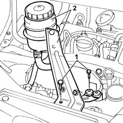
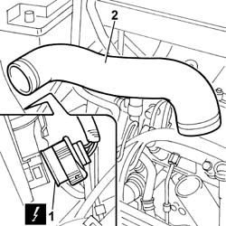
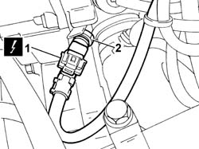
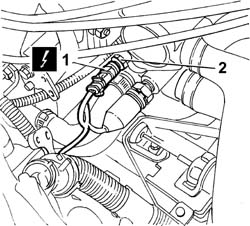
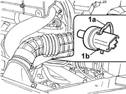

1060G14 ENGINE COOLANT TEMPERATURE SENSOR - R R
- Path
- Procedures > 10 ENGINE UNIT > 1060 DIESEL INJECTION SYSTEM > 1060G PRESSURE PUMP ELECTRIC CONTROL > 1060G14 ENGINE COOLANT TEMPERATURE SENSOR - R R
- Kind
- repair procedure (removal / refitting; the operation number is the code)
- Applies to
- engines: 2.0 JTD 8V, 2.3 JTD 16V, 2.8 JTD 8V; all production periods
- Interactive page
- https://sloeber94.github.io/elrnDB-fDct/en/#/244000844
Applies to: engines: 2.3 JTD 16V; all production periods
 Removing
Removing
 Refitting
Refitting1. Undo the bolts fixing the power assisted steering fluid reservoir mounting bracket.
2. Move the power assisted steering fluid reservoir complete with bracket.

Applies to: engines: 2.3 JTD 16V; all production periods
1. Disconnect the electrical connection for the right front light cluster.
 | Description | Connector |
|---|---|---|
. | Right headlamp | F011 |
2. Disconnect the bands at the two ends and remove the air pipe from the air/air heat exchanger to the intake manifold.

Applies to: engines: 2.3 JTD 16V; all production periods
1. Disconnect the electrical connection for the coolant temperature sensor.
| Description | Connector |
|---|---|---|
1 | Engine coolant temperature sensor/sender unit | K036 |
2. Using a 19 mm diameter bush, undo and the coolant temperature sensor and remove it.

Applies to: engines: 2.3 JTD 16V; all production periods
Refitting
Removing- Fit the coolant temperature sensor and tighten it in the housing on the thermostat.
- Connect the electrical connection for the coolant temperature sensor.
| Description | Connector |
|---|---|---|
. | Engine coolant temperature sensor/sender unit | K036 |
- Fit the air pipe from the air/air heat exchanger to the intake manifold.
- Cconnect the electrical connection for the right front light cluster.
| Description | Connector |
|---|---|---|
. | Right headlamp | F011 |
- Fit the power assisted steering fluid reservoir complete with bracket.
- Tighten the bolts fixing the power assisted steering fluid reservoir mounting bracket.
Applies to: engines: 2.8 JTD 8V; all production periods
Removing
Refitting- Disconnect the negative battery terminal.
See in Op. 1048A21
1. Disconnect the electrical connection for the sensor.
| Description | Connector |
|---|---|---|
1 | Engine coolant temperature sensor/sender unit | K036 |
2. Undo the engine coolant temperature sensor and remove it.

Applies to: engines: 2.8 JTD 8V; all production periods
Refitting
Removing- Tighten the sensor in position on the thermostat and check the torque.
- Connect the electrical connection.
| Description | Connector |
|---|---|---|
. | Engine coolant temperature sensor/sender unit | K036 |
See in Op. 1048A21
- Connect the negative battery terminal.
Applies to: engines: 2.0 JTD 8V; all production periods
Removing
Refitting- Disconnect the negative battery terminal.
- Disconnect the electrical connection for the water temperature sensor.
| Description | Connector |
|---|---|---|
. | Engine coolant temperature sensor/sender unit | K036 |
1. Release the spring (1a) and remove the water temperature sensor (1b) from the thermostat.

Applies to: engines: 2.0 JTD 8V; all production periods
Refitting
Removing- Fit the water temperature sensor in the housing on the thermostat and secure them in place using the spring.
- Connect the electrical connector.
| Description | Connector |
|---|---|---|
. | Engine coolant temperature sensor/sender unit | K036 |
- Connect the negative battery terminal.